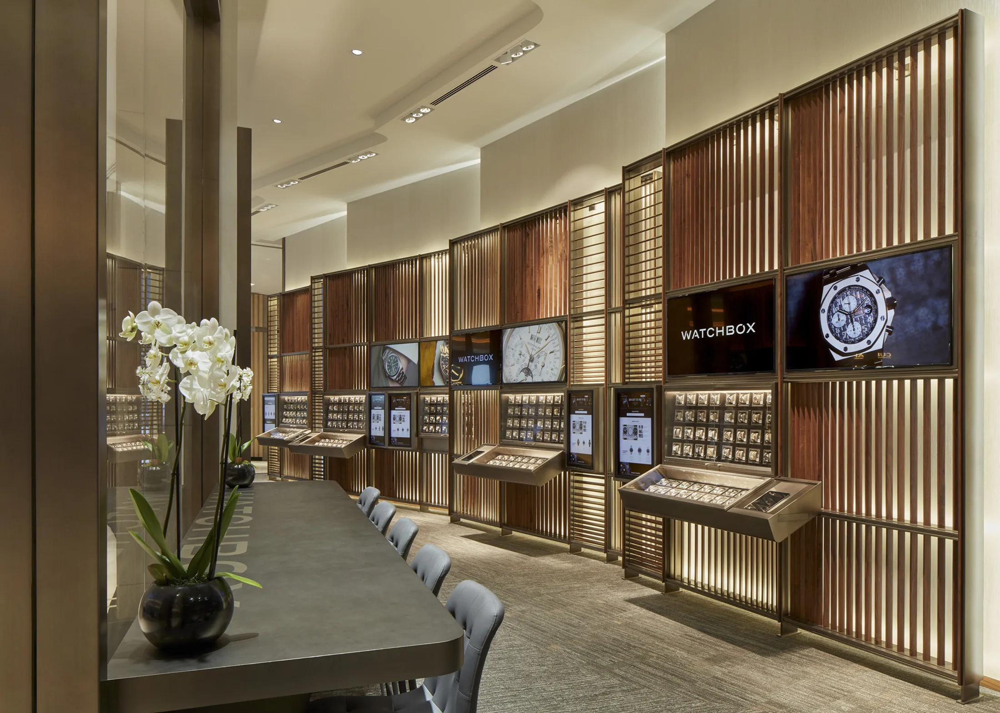

Добре дошли в „Луксозни Часовници Пазарджик“ — Времето, изразено в съвършенство
Нашата история: Над 40 години традиция и страст
Основана през 1980 година, фирма „Луксозни Часовници Пазарджик“ започва своя път с една ясна мисия — да превърне измерването на времето в изкуство. Вече над четири десетилетия пазим традициите на класическото часовникарство, съчетавайки ги с най-новите иновации и световни тенденции. Преминала през изпитанията на времето, днес нашата компания е символ на доверие, безупречно качество и престиж в региона.
Изключително разнообразие и богата гама от артикули
При нас всеки детайл има значение. За да отговорим на най-високите изисквания на нашите клиенти, поддържаме богата гама от артикули, селектирани с внимание и усет към стила:
- Класически и механични часовници — прецизни автоматични модели от световни лидери в индустрията.
- Дамски и мъжки колекции — от изчистена елегантност за официални поводи до спортно-елегантни хронографи за всекидневието.
- Лимитирани серии — уникални модели за ценители и колекционери.
- Аксесоари от най-висок клас — луксозни каишки от естествена кожа, дизайнерски верижки, кутии за навиване и съхранение.